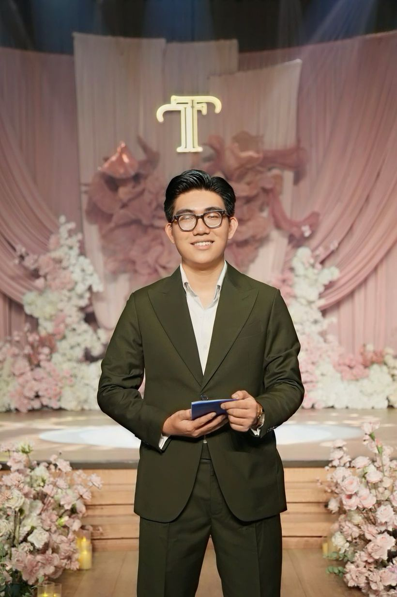
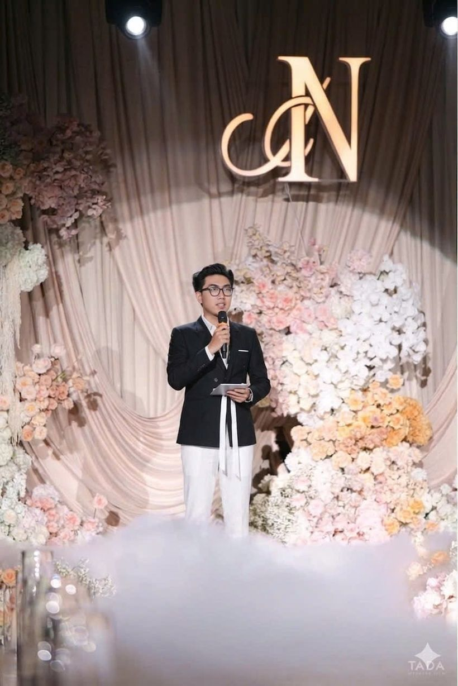
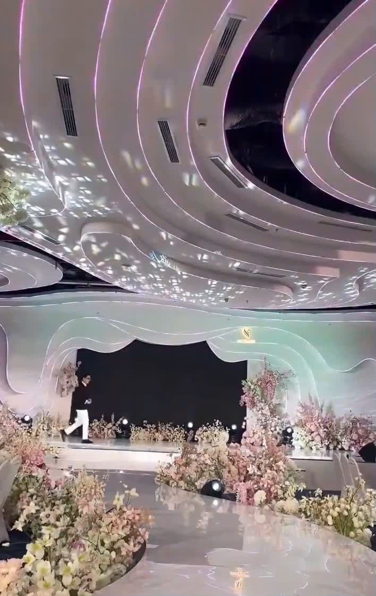
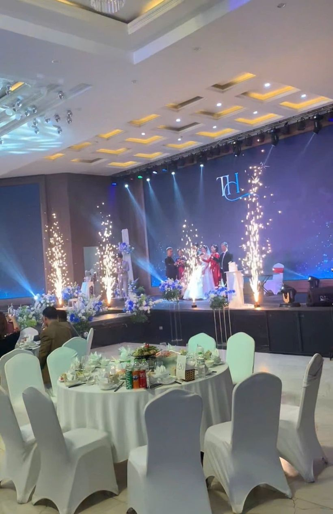
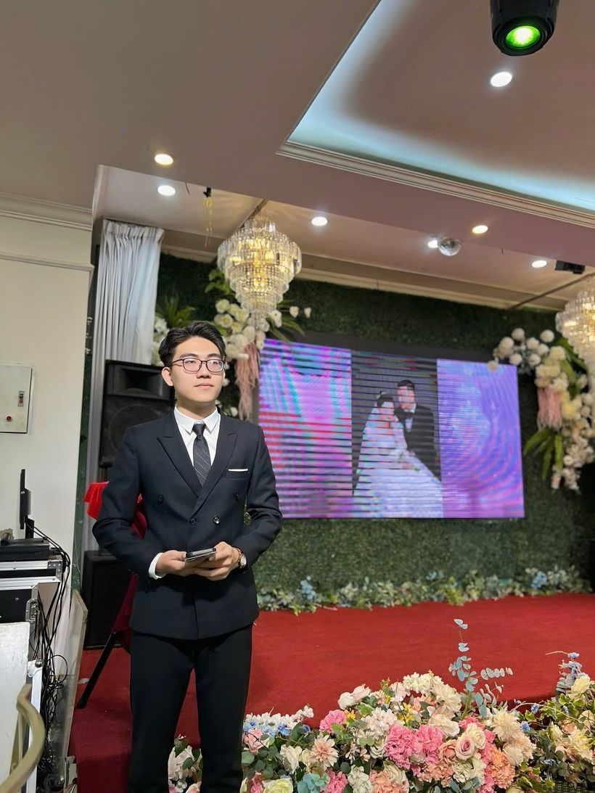
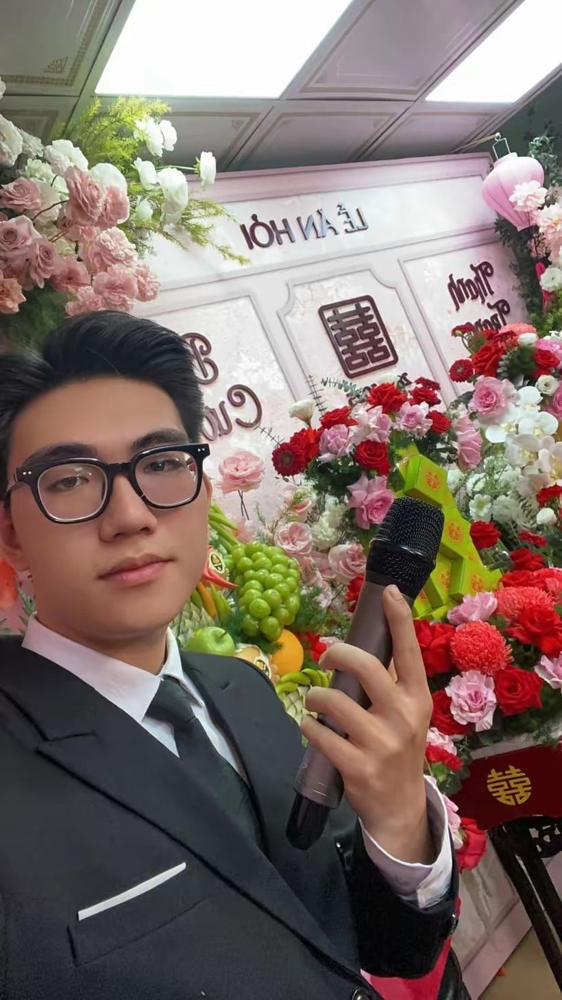
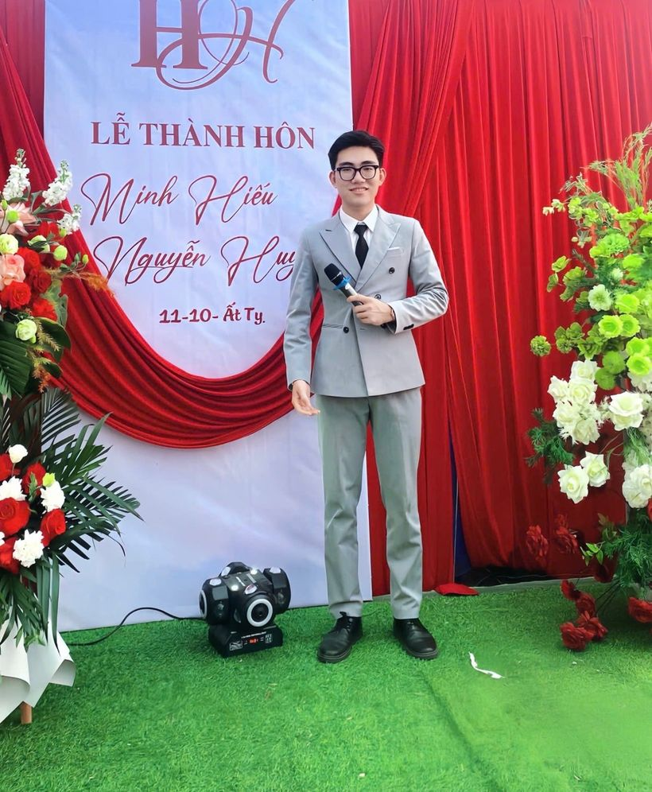
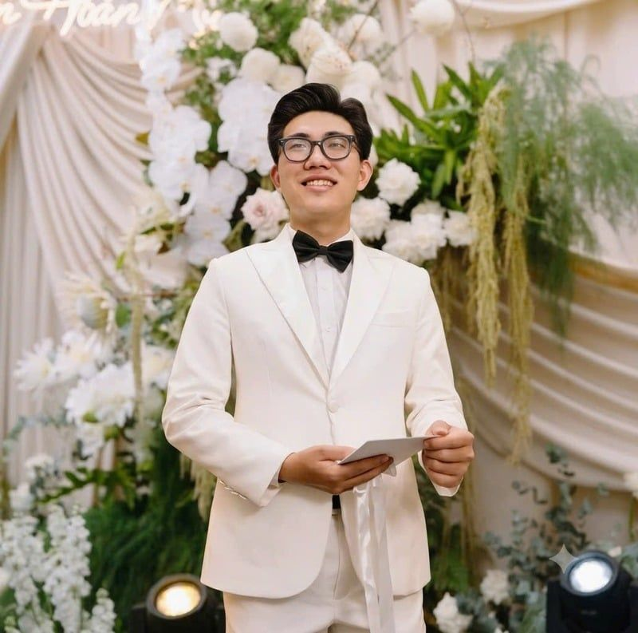
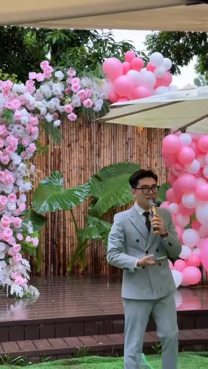

Sảnh tiệc · Trọn chương trình MC nhà hàng, khách sạn Dẫn toàn bộ tiệc cưới tại sảnh, từ đón khách, nghi lễ trên sân khấu đến phần giao lưu cuối tiệc. Mình phối hợp với nhà hàng và đội âm thanh ánh sáng để chương trình đúng giờ và liền mạch. Video     
Tư gia · Lễ dạm ngõ, ăn hỏi MC lễ ăn hỏi Dẫn lễ ăn hỏi truyền thống với sự tinh tế và hiểu biết về phong tục. Mình kết nối hai gia đình, giữ không khí trang trọng mà vẫn gần gũi, ấm áp. 
Tư gia · Vu quy, thành hôn MC lễ tư gia Dẫn lễ vu quy và lễ thành hôn tại nhà theo đúng nghi thức của từng gia đình. Mình thay mặt hai họ chào hỏi, điều phối trao nhận lễ vật và giữ cho buổi lễ đúng giờ lành. 
Nghi thức · Lời thề nguyện MC lễ Vow Dẫn khoảnh khắc cô dâu chú rể trao nhau lời thề nguyện. Kịch bản viết riêng theo câu chuyện của hai bạn, lời dẫn đủ lắng để cả khách mời cùng xúc động.  